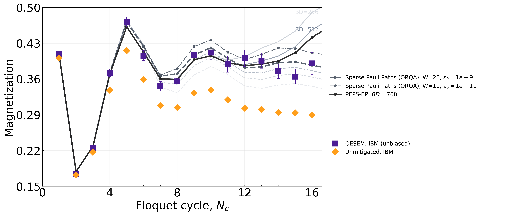
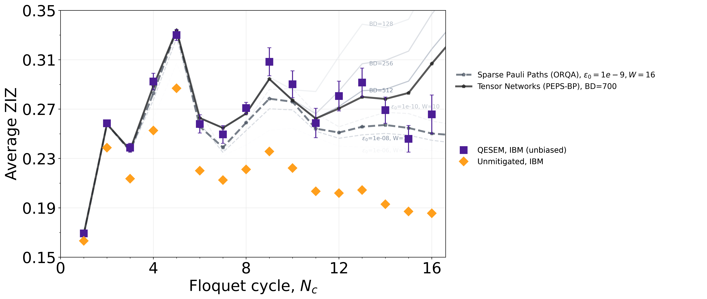
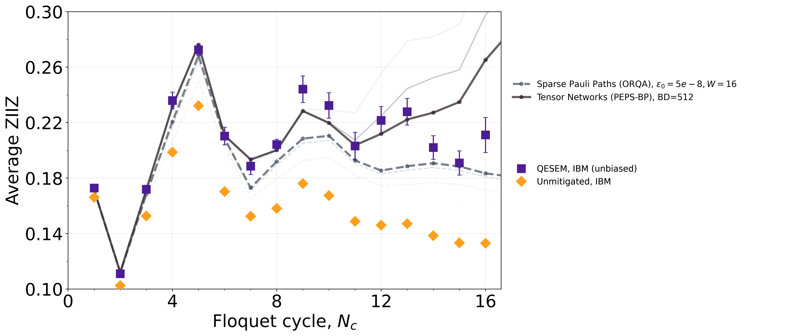

floquet_mixed_field_ising_mag_51qx16c:
This instance implements Floquet dynamics corresponding to the mixed-field Ising model on a heavy-hex lattice with \(N=51\) qubits and \(N_c=16\) Floquet cycles (see details below). The measured observable is the magnetization, defined as
M = \frac{1}{N}\sum_{i} Z_i,where the sum runs over all the qubits of the heavy-hex lattice.
floquet_mixed_field_ising_zzd2_51qx16c:
This instance implements Floquet dynamics corresponding to the mixed-field Ising model on a heavy-hex lattice with \(N=51\) qubits and \(N_c=16\) Floquet cycles (see details below). The measured observable is the average two-point correlator at graph distance \(d=2\), defined as
ZZ_{d=2} = \frac{1}{N_{d=2}} \; \sum_{(i,j)\,:\,d(i,j)=2} Z_i Z_jwhere \((i, j)\) ranges over all pairs of qubits at graph distance \(d=2\) within the heavy-hex lattice (see pair list below), and \(N_{d=2}\) is the total number of those pairs.
floquet_mixed_field_ising_zzd3_51qx16c:
This instance implements Floquet dynamics corresponding to the mixed-field Ising model on a heavy-hex lattice with \(N=51\) qubits and \(N_c=16\) Floquet cycles (see details below). The measured observable is the average two-point correlator at graph distance \(d=3\), defined as
ZZ_{d=3} = \frac{1}{N_{d=3}} \; \sum_{(i,j)\,:\,d(i,j)=3} Z_i Z_jwhere \((i, j)\) ranges over all pairs of qubits at graph distance \(d=3\) within the heavy-hex lattice (see pair list below), and \(N_{d=3}\) is the total number of those pairs.
floquet_mixed_field_ising_{measured observable}_{N}qx{N_c}c.The experiment explores non-equilibrium Floquet dynamics of the 2D mixed-field Ising model on a heavy-hex lattice of \(N\) qubits. In those circuits, the qubits are initialized in \[|\psi_0\rangle = |0\rangle^{\otimes N}\] and evolved over \(N_c\) Floquet cycles to
\[|\psi(N_c)\rangle = U_F^{N_c} |\psi_0\rangle.\]
Each Floquet cycle \(U_F = U_3 \cdot U_2 \cdot U_1\) consists of three layers, where:
U_m = \prod_{(j,k)\in\mathcal{E}_m} RZZ(\theta_{zz})
\prod_{i} RZ\left(\tfrac{\theta_z}{3}\right)
\prod_{i} RX\left(\tfrac{\theta_x}{3}\right)Here \(\mathcal{E}_1, \mathcal{E}_2, \mathcal{E}_3\) is a partition of all edges of the \(N\)-qubit patch into three disjoint subsets.
Additional details for the circuit instances corresponding to the \(N=51\)-qubit lattice:
Lattice
The 51-qubit patch follows the IBM heavy-hex connectivity, with qubits indexed 0-50. The lattice is shown below; different edge colors correspond to the three edge layers \(\mathcal{E}_1, \mathcal{E}_2, \mathcal{E}_3\) (see the table below).
Edge Layers
| Layer | Edges |
|---|---|
| \(\mathcal{E}_1\) | [(0, 1),(3, 4),(5, 9),(10, 11),(6, 13),(16, 19),(20, 21),(17, 23),(24, 25),(18, 27),(28, 32),(33, 34),(29, 36),(37, 38),(39, 42),(43, 44),(40, 46),(47, 48),(41, 50)] |
| \(\mathcal{E}_2\) | [(2, 3),(7, 8),(9, 10),(11, 12),(13, 14),(15, 18),(19, 20),(21, 22),(23, 24),(25, 26),(30, 31),(32, 33),(34, 35),(36, 37),(38, 41),(42, 43),(44, 45),(46, 47),(48, 49)] |
| \(\mathcal{E}_3\) | [(1, 2),(0, 5),(4, 6),(8, 9),(12, 13),(7, 16),(11, 17),(22, 23),(26, 27),(21, 28),(25, 29),(31, 32),(35, 36),(30, 39),(34, 40),(45, 46),(49, 50),(14, 15)] |
Circuit parameters
| Parameter | Value |
|---|---|
| \(\theta_x\) | \(1.56567\) |
| \(\theta_z\) | \(0.33879\) |
| \(\theta_{zz}\) | \(\pi/3\) |
Pair lists for \(ZZ_{d=2}\) and \(ZZ_{d=3}\) observables
| Observable | Pair list |
|---|---|
| \(ZZ_{d=2}\) | [[6, 12], [16, 20], [32, 34], [41, 49], [18, 26], [15, 27], [29, 35], [5, 10], [46, 48], [0, 2], [23, 25], [38, 50], [40, 47], [9, 11], [17, 24], [10, 12], [1, 3], [19, 21], [11, 23], [28, 33], [34, 46], [47, 49], [24, 26], [6, 14], [33, 35], [30, 42], [7, 19], [24, 29], [42, 44], [26, 29], [43, 45], [3, 6], [20, 22], [20, 28], [14, 18], [29, 37], [22, 28], [2, 4], [48, 50], [34, 36], [1, 5], [11, 13], [10, 17], [30, 32], [37, 41], [7, 9], [25, 27], [33, 40], [35, 37], [25, 36], [21, 23], [35, 40], [12, 14], [44, 46], [12, 17], [4, 13], [5, 8], [22, 24], [31, 33], [21, 32], [31, 39], [0, 9], [8, 10], [8, 16], [39, 43], [17, 22], [40, 45], [28, 31], [36, 38], [45, 47], [13, 15]] |
| \(ZZ_{d=3}\) | [[33, 36], [43, 46], [3, 13], [17, 21], [34, 37], [9, 17], [11, 14], [28, 30], [13, 17], [6, 11], [7, 10], [32, 39], [44, 47], [29, 34], [8, 11], [39, 44], [9, 12], [23, 29], [31, 42], [27, 29], [36, 41], [47, 50], [42, 45], [30, 43], [5, 7], [29, 38], [22, 32], [12, 15], [22, 25], [9, 16], [45, 48], [16, 21], [5, 11], [46, 49], [35, 46], [23, 26], [2, 6], [19, 22], [17, 25], [13, 18], [28, 34], [25, 35], [6, 15], [20, 23], [26, 36], [20, 32], [21, 31], [23, 28], [40, 44], [1, 9], [36, 40], [30, 33], [41, 48], [18, 25], [21, 24], [21, 33], [38, 49], [34, 45], [10, 23], [11, 22], [37, 50], [33, 46], [12, 23], [1, 4], [8, 19], [19, 28], [34, 47], [11, 24], [24, 27], [32, 40], [7, 20], [24, 36], [4, 12], [0, 8], [2, 5], [15, 26], [35, 38], [25, 37], [4, 14], [31, 34], [0, 10], [14, 27], [32, 35], [0, 3], [10, 13], [40, 48]] |
The figures below show the estimated three observables across \(N_c\in [1,16]\) Floquet cycles for \(N=51\) qubits (same layers and configuration as described above), comparing results from three methods carried out by the institutions involved in this submission:
QESEM, IBM (unbiased): Results obtained on ibm_boston using Qedma’s error-suppression and error-mitigation software (QESEM) [1]. QESEM (unbiased) combines high-accuracy characterization, quasi-probabilistic mitigation of fractional-angle entangling gates, and active volume identification. This approach yields expectation values that are unbiased up to characterization error; the error bars reflect the statistical uncertainties of the mitigation [1].
Sparse Pauli Paths (ORQA): A Sparse Pauli Path (SPP) method based on a scalable parallel implementation of the ORQA formalism [2], executed on the supercomputer Fugaku. Here \(\varepsilon_0\) is the truncation threshold and \(W\) is the maximum Pauli weight considered in the tracked Pauli paths.
Tensor Networks with Belief Propagation (PEPS-BP) : Based on evolving the wavefunction as a projected entangled pair state (PEPS) with belief propagation, implemented with the open-source package TensorNetworkQuantumSimulator.jl.
The faded dashed lines correspond to SPP (ORQA) results obtained with larger truncation thresholds (\(\epsilon_0\)) and smaller maximum Pauli weights (\(W\)), while the faded solid lines correspond to PEPS-BP results with smaller bond dimensions (BD).
Magnetization (M):

Average ZIZ (\(ZZ_{d=2}\)):

Average ZIIZ (\(ZZ_{d=3}\)):

The following table summarizes the expectation values for the magnetization, computed using each of the methods above, together with their corresponding runtimes and compute resources:
| Cycle | Method |
Expectation Value (lower, upper) |
Runtime | Hardware |
|---|---|---|---|---|
| 13 | QESEM | 0.396 (0.381, 0.411) | 3,184s (Q) + 1,774s (C) | ibm_boston |
| 13 |
PEPS-BP (BD=700) |
0.3891136 | 52,793s (C) | 128 vCPUs (AMD EPYC 7R13), 334 GiB RAM |
| 13 |
SPP (W=11, ε₀=1e-11) |
0.40829123 | 43,698s (C) | 12,288 Fugaku nodes (65,536 cores) |
| 13 |
SPP (W=20, ε₀=1e-9) |
0.38356027 | 22,228s (C) | 12,288 Fugaku nodes (65,536 cores) |
| 14 | QESEM | 0.3751 (0.3611, 0.3891) | 4,857s (Q) + 2,706s (C) | ibm_boston |
| 14 |
PEPS-BP (BD=700) |
0.395225 | 181,760s (C) | 128 vCPUs (AMD EPYC 7R13), 334 GiB RAM |
| 14 |
SPP (W=11, ε₀=1e-11) |
0.42070765 | 47,041s (C) | 12,288 Fugaku nodes (65,536 cores) |
| 14 |
SPP (W=20, ε₀=1e-9) |
0.39211172 | 23,061s (C) | 12,288 Fugaku nodes (65,536 cores) |
| 15 | QESEM | 0.3649 (0.3503, 0.3795) | 8,615s (Q) + 4,801s (C) | ibm_boston |
| 15 |
PEPS-BP (BD=700) |
0.4112448 | 317,861s (C) | 128 vCPUs (AMD EPYC 7R13), 334 GiB RAM |
| 15 |
SPP (W=11, ε₀=1e-11) |
0.41982974 | 50,008s (C) | 12,288 Fugaku nodes (65,536 cores) |
| 15 |
SPP (W=20, ε₀=1e-9) |
0.39349978 | 23,734s (C) | 12,288 Fugaku nodes (65,536 cores) |
| 16 | QESEM | 0.3904 (0.3691, 0.4117) | 6,228s (Q) + 3,471s (C) | ibm_boston |
| 16 |
PEPS-BP (BD=700) |
0.4417984 | 392,770s (C) | 128 vCPUs (AMD EPYC 7R13), 334 GiB RAM |
| 16 |
SPP (W=11, ε₀=1e-11) |
0.41110594 | 52,679s (C) | 12,288 Fugaku nodes (65,536 cores) |
| 16 |
SPP (W=20, ε₀=1e-9) |
0.38697176 | 24,307s (C) | 12,288 Fugaku nodes (65,536 cores) |
From the figures and table above, neither classical method achieves convincing convergence despite the substantial computational resources employed. PEPS-BP remains reliable only up to \(N_c\sim 12\), beyond which convergence is lost both relative to the quantum data and across the different bond dimensions. Likewise, SPP simulations with \((W,\varepsilon_0)=(11,10^{-11})\) and \((20,10^{-9})\), consuming comparable extensive resources, tracking a peak of \(\sim 1.4\times10^{12}\) and \(\sim 7\times10^{11}\) Pauli paths, respectively. exhibit large discrepancies in addition to a phase offset, and incorrect oscillation amplitudes relative to the quantum results. Over the interval \(N_c\in[13,16]\), neither method reproduces two the quantum data consistently, both either overshoot or underestimate the quantum results where any local agreement with the quantum data appears to be incidental rather than being systematic.
Qedma, IBM, Riken, BlueQubit
[1] Aharonov et al. (Qedma), arXiv:2508.10997 (2025)
[2] Broers, Sun & Yunoki, arXiv:2506.13241 (2025)